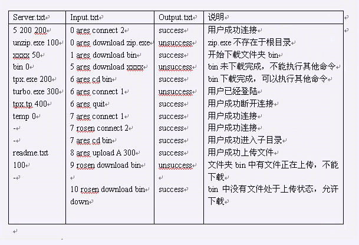

题目描述
File Transfer Protocol , 文件传输协议，简称FTP。人们可以通过FTP实现资源共享。一般的情况下用户访问一个FTP服务器是通过类似资源管理器的形式对该服务器上的资源进行浏览，并且不同权限的用户可以实现下载文件/文件夹，上传文件/文件夹。 FTP的基本常识 一个FTP服务器的所有资源都以文件的形式按树形结构存储在不同的文件夹里，最低一级的是根目录（即根文件夹），根目录里有若干个文件和文件夹，每一个文件夹里都可以拥有0个或多个文件及文件夹，同一文件夹里不存在名称相同的文件和文件夹。 一个用户包含三个属性 userType：用户类型 userState：用户状态（用户正在执行的操作） userPosition：用户当前所处的位置（即用户正在浏览的文件夹） 用户分3种类型：上传用户uploadUser，下载用户downloadUser，匿名用户guest。 操作分3种类型：浏览scan，下载download，上传upload。 用户的权限是指用户允许进行的操作。不同类型的用户的权限是不同的，见下表 用户类型 用户权限 下载用户 浏览，下载 上传用户 浏览，上传 匿名用户 浏览 任何一个用户是不能进行其没有权限的操作的，例如：一个匿名用户想要下载一个文件或者文件夹是不允许的。 一个文件/文件夹包含三个属性： fileName/folderName：文件名（不包含空格和回车） fileSize/folderSize：文件大小 （单位byte，00）小于userFlux的话，上传/下载时间仍将按照一秒钟看待。 而userFlux的值是如何确定的呢？ userFlux = min（presentMaxUserFlux, maxUserFlux） 其中，presentMaxUserFlux为当前服务器的单个用户最大流量 presentMaxUserFlux = [maxServerFlux / userTotal] （userTotal表示该时刻的正在进行上传和下载操作的用户数量） 用户的基本命令order 一个用户通过一系列命令实现其在FTP服务器上的相关操作。下面介绍这些命令： connect命令，格式：[name]+空格+connect+参数A，例：tsinghua connect 1 表示在名叫name的用户请求以A身份连接到服务器上。如果当前的最大使用用户还没达到maxUserNumber，并且该用户未连接到服务器，则连接成功，服务器反馈回一个相关信息“success”。否则反馈信息为“unsuccess”。一旦连接成功，用户其所处的位置userPosition为服务器的根目录。A=1表示上传用户，A=2下载表示用户，A=3表示匿名用户。 quit命令，格式：[name]+空格+quit，例tsinghua quit 表示名叫name的用户断开与服务器的连接。如果用户未连接反馈“unsuccess”，否则反馈”success”。(注意用户在任何状态下都可以断开与服务器的连接)。 cd命令，格式：[name]+空格+cd+空格+[floderName/文件夹名称]，例：THU cd FD 表示名叫name的用户希望从当前所处的文件夹进入该文件夹中的一个名叫floderName的文件夹。如果名叫floderName的文件夹存在并且处于normal状态，则改变用户当前所处位置userPosition，反馈相关信息“success”，如果该文件夹不存在或该用户没有成功连接，则反馈信息为“unsuccess”。 cd..命令，格式：[name]+空格+cd..，例：9# cd.. 表示名叫name的用户希望从当前所处的文件夹返回到他的上一级文件夹。如果用户处于根目录或者用户未连接，则命令执行失败返回“unsuccess”，否则返回success，并且改变用户所处位置userPosition。 download命令，格式：[name]+空格+download+空格+[name1]，例：A download 1.txt 表示名叫name的用户希望从当前所处文件夹下载名为name1的文件或者文件夹。如果用户未连接，用户没有下载权限，名为name1的文件/文件夹不存在，或者该文件/文件夹处于uploading状态时，反馈信息“unsuccess”，否则返回“success”并且开始下载该文件/文件夹。(一旦一个下载命令开始执行，那么执行该命令的用户所下载的是下载命令执行的那一时刻的那一个文件/文件夹，也就是说如果一个用户正在下在某个文件夹，在下载过程中，有另外一用户在这个文件夹里面上传文件，那么原下载用户是不可能下载到这个新上传的文件的) upload命令，格式：[name]+空格+upload+空格+[name1]+空格+[size]，例:A upload B 1 表示名叫name的用户希望在当前所处的文件夹上传一个名叫name1的大小为size的文件/文件夹。注意：用户通过upload命令上传文件夹只能为空文件夹，当size=0表示上传文件夹，size>0表示上传文件。如果当前目录已经存在了同名的文件/文件夹，用户未成功连接或者用户没有上传权限，反馈信息“success”，否则反馈“unsuccess”，并且开始上传文件/文件夹。（如果一个用户想要上传一个非空文件夹，是很容易通过一系列upload以及cd命令实现的） 除上传文件和下载文件/文件夹命令需要耗时外，其他的命令都不需要执行时间。 【任务描述】 你的任务是模拟一个FTP服务器在某一时间段内的运行过程。
输入格式
你将获得FTP的服务器的初始信息，第一行为3个正整数，分别表示maxUserNumber，maxServerFlux，maxUserFlux。接下来的若干行描述server里已有文件资源的存储情况。 第一行总是描述的根目录中的一个文件或者文件夹。 如果某一行描述的是一个文件或者文件夹那么该行的数据为name+空格+size，如果size=0表示这是一个文件夹，否则表示一个大小为size的文件。 如果某一行描述的是一个文件夹，那么接下来的若干行描述的都是这个文件夹里的内容，直到一个与之对应的减号为止。这些数据都是递归描述的。因为一开始就是描述整个根目录里的文件和文件夹，所以server.txt的最后一行也为减号。（参看输入示例）。 整个的模拟过程是围绕着input.txt里的内容展开的，input.txt的每一行为time+空格+order的形式给出，其中 。例如”4 ares connect 1”表示：在服务器开启后4秒钟，名叫ares的用户请求以uploadUser的身份连接到服务器上来。 Input.txt的最后一行为一个字符串”down”。 所有输入命令的时刻time在input.txt中都以命令出现的先后递增，同一时刻的命令以input.txt中出现的先后顺序确定其执行顺序。
输出格式
请你将每一条命令的反馈信息输出到output.txt当中。
样例输入

样例输出
提示
没有写明提示
题目来源
没有写明来源